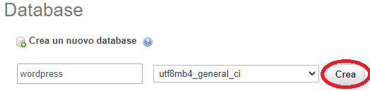

Partiamo andando sul sito di XAMPP e
clicchiamo sul pulsante Clicca qui per altre versioni
Nella schermata che ci appare, scarichiamo la versione 7.4.27 per il nostro sistema
operativo
Diamo OK sul messaggio di avviso che comparirà sullo schermo
E clicchiamo Next > per avviare la procedura di installazione
Lasciamo tutto com'è e andiamo avanti
Lasciamo il percorso di installazione a C:\xampp per evitare successivi problemi di
permessi
Selezioniamo la lingua
Clicchiamo Next >
Ancora una volta Next >
A questo punto l'installazione avrà inizio
Una volta finita l'installazione clicchiamo su Finish e avviamo XAMPP
Diamo tutti i permessi necessari
Una volta avviato XAMPP, clicchiamo su Start sui moduli Apache and
MySQL
Rechiamoci adesso sul sito di WordPress e
scarichiamo il file
.zip dell'ultima versione di WordPress
Una volta scaricato il file, estraiamolo nel percorso C:\xampp\htdocs.
Apriamo adesso il nostro browser e inseriamo questo URL nella barra di ricerca: localhost/phpmyadmin/
Nella schermata che si apre clicchiamo su Nuovo sulla barra a sinistra
Diamo un nome al database, di solito wordpress e clicchiamo su Crea

Nella tab Privilegi clicchiamo su Aggiungi account utente
Inseriamo un nome utente e una password per WordPress
Diamo tutti i privilegi e clicchiamo su Esegui
Adesso che il database è pronto per l'uso, inseriamo l'URL localhost/wordpress/wp-admin/install.php
nella barra di ricerca. Una volta qui selezioniamo la lingua e clicchiamo Continua
Clicchiamo su Iniziamo!
Qui inseriamo i dati del database e dell'utente che abbiamo creato prima
Se i dati immessi sono corretti, verremmo portati a questa pagina dove dovremmo cliccare Avvia
l'installazione
In questa schermata finale, non dovremmo far altro che dare un nome al nostro sito e creare il nostro
utente che ci servirà per accedere alla Dashboard di WordPress
Facciamo il login
Ed eccoci portati alla Dashboard di WordPress. Da qui potremmo controllare tutte le varie impostazioni e
creare effettivamente il nostro sito.